콘크리트기사 (2018-04-28 기출문제)
1과목: 재료 및 배합
1. 시멘트의 응결 시험 방법으로 옳은 것은?
- 길모어 침에 의한 시험
- 오토클레이브에 의한 시험
- 비비시험
- 블레인시험
(정답률: 85%)

2. 르샤틀리에 비중병을 이용한 시멘트의 비중시험을 통해 알 수 없는 것은?
- 동결융해 저항성
- 클링커의 소성상태
- 시멘트의 풍화정도
- 시멘트의 품질
(정답률: 66%)
3. 시멘트의 강도 시험방법(KS L ISO 679)에 의해 시멘트의 압축강도 시험을 실시하고자 한다. 시멘트 450g을 사용하여 공시체를 제작할 때 모래의 사용량은?
- 900g
- 1125g
- 1250g
- 1350g
(정답률: 71%)
4. 콘크리트의 시방배합을 현장배합으로 보정하려고 할 때 필요한 시험은?
- 골재의 표면수율 시험
- 시멘트 모르타르 플로우 시험
- 골재의 밀도시험
- 시멘트 비중시험
(정답률: 72%)
5. 단위용적질량이 1680kg/m3인 굵은골재의 절건밀도가 0.00265g/mm3라면 이 골재의 공극률은 얼마인가?
- 59.5%
- 52.1%
- 47.9%
- 36.6%
(정답률: 53%)
6. 밀도 2.5g/cm3, 함수율 8%, 흡수율 3%인 잔골재의 표면수율은 얼마인가?
- 4.41%
- 4.63%
- 4.85%
- 5.00%
(정답률: 42%)
7. 일반콘크리트의 배합에서 물-결합재비에 대한 설명으로 틀린 것은?
- 제빙화학제가 사용되는 콘크리트의 물-결합재비는 45%이하로 한다.
- 콘크리트의 수밀성을 기준으로 물-결합재비를 정할 경우 그 값은 50%이하로 한다.
- 콘크리트의 탄산화 저항성을 고려하여 물-결합재비를 정할 경우 40%이하로 한다.
- 물에 노출되었을 때 낮은 투수성이 요구되는 콘크리트의 내동해성을 기준으로 하여 물-결합재비를 정할 경우 50%이하로 한다.
(정답률: 77%)
8. 강모래를 이용한 콘크리트에 비해 부순잔골재를 이용한 콘크리트의 차이에 대한 설명으로 틀린 것은?
- 미세한 분말량이 많아짐에 따라 응결의 초결시간과 종결시간이 길어진다.
- 동일 슬럼프를 얻기 위해서는 단위수량이 5~10%정도 더 필요하다.
- 건조수축률은 미세한 분말량이 많아지면 증대한다.
- 미세한 분말량이 많아지면 슬럼프가 저하하기 때문에 그 양에 의하여 잔골재율(S/a)을 낮춰준다.
(정답률: 54%)
9. 금속 재료의 인장시험을 위한 시험편의 준비에 대한 설명으로 틀린 것은?
- 표점은 시험편에 도료를 칠한 위에 줄을 그어 표시하는 것을 원칙으로 한다.
- 시험편 부분의 재질에 변화를 발생시키는 변형 또는 가열을 해서는 안된다.
- 시험편의 교정은 최대한 피하는 것이 좋고, 교정을 필요로 하는 경우에는 가급적 재질에 영향을 미치지 않는 방법을 사용하도록 한다.
- 전단, 펀칭 등에 의한 가공을 한 시험편에서 시험 결과에 그 가공의 영향이 인정되는 경우에는 가공의 영향을 받은 영역을 절삭ㆍ제거하여 평행부를 다듬질 한다.
(정답률: 69%)
10. 압축강도 시험의 기록이 없는 경우 콘크리트 배합강도로 틀린 것은? (단, fck는 콘크리트의 설계기준 압축강도)
- ck가 20MPa인 경우 배합강도는 27MPa
- ck가 28MPa인 경우 배합강도는 36.5MPa
- ck가 31MPa인 경우 배합강도는 39.5MPa
- ck가 40MPa인 경우 배합강도는 52MPa
(정답률: 71%)
11. 레디믹스트 콘크리트의 혼합에 사용되는 물에 대한 설명으로 틀린 것은?
- 콘크리트 회수수에서 슬러지수를 일부 활용하고 남은 슬러지를 포함한 물을 상징수라고 한다.
- 상수독물은 시험을 하지 않아도 사용할 수 있다.
- 회수수를 사용하였을 경우 단위 슬러지고형분율이 3.0%를 초과하면 안된다.
- 레디믹스트 콘크리트를 배합할 때, 회수 중에 함유된 슬러지 고형분은 물의 질량에 포함되지 않는다.
(정답률: 50%)
12. 콘크리트용 모래에 포함되어 있는 유기불순물 시험 방법(KS F 2510)에 대한 설명으로 틀린 것은?
- 모래의 사용 여부를 결정함에 앞서 보다 더 정밀한 모래에 대한 시험의 필요성 유무를 미리 확인하기 위해 실시한다.
- 시험 용액의 색도가 표준색 용액보다 진할 경우 콘크리트용으로 적합한 것으로 판정한다.
- 사용하는 시료는 대표적인 것을 취하고 공기 중 건조 상태로 건조시켜서 4분법 또는 시료 분취기를 사용하여 약 450g을 채취한다.
- 10%의 알코올 용액으로 2%의 탄닌산 용액을 만들고, 그 2.5mL를 3%의 수산화나트륨 용액 97.5mL에 가하여 유리병에 넣어 마개를 닫고 잘 흔들어서 만든 것을 식별용 표준색 용액으로 한다.
(정답률: 77%)
13. 아래 표와 같은 조건의 시방배합에서 잔골재와 굵은골재의 단위량은 약 얼마인가?
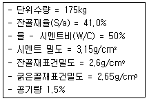
- 잔골재 : 735kg, 굵은골재 : 979kg
- 잔골재 : 745kg, 굵은골재 : 1093kg
- 잔골재 : 756kg, 굵은골재 : 1193kg
- 잔골재 : 770kg, 굵은골재 : 1293kg
(정답률: 70%)
14. 다음 중 콘크리트용 화학혼화제(KS F 2560)의 품질시험 항목이 아닌 것은?
- 감수율(%)
- 압축강도비(%)
- 오토클레이브 팽창도(%)
- 동결 융해에 대한 저항성(%)
(정답률: 62%)
15. 시멘트 제조원료에 대한 설명으로 틀린 것은?
- 시멘트중의 MgO의 함유성분이 많으면 콘크리트 경화제에 균열을 일으킨다.
- 시멘트중의 알칼리 성분이 많으면 콘크리트 강도를 증가시킨다.
- 포틀랜드 시멘트는 주로 석회질 원료 및 점토질 원료를 적당한 비율로 혼합하여 제조한다.
- 석고를 첨가하면 응결이 지연된다.
(정답률: 66%)
16. 콘크리트의 설계기준 압축강도가 40MPa이고, 30회 이상의 압축강도 시험실적으로부터 구한 표준편차가 5MPa인 경우 배합강도는?
- 46.7MPa
- 47.7MPa
- 48.2MPa
- 50MPa
(정답률: 70%)
17. 시멘트의 강열감량에 대한 설명으로 틀린 것은?
- 시멘트를 약 950℃ 정도로 가열하였을 때 중량 감소 백분율을 말한다.
- 강열감량은 시멘트의 풍화정도를 판단하기 위해 사용한다.
- 시멘트의 풍화가 진행되었거나 혼합물이 존재하면 강열감량은 감소한다.
- 강열감량이 큰 경우 콘크리트의 압축강도는 감소한다.
(정답률: 70%)
18. 아래와 같은 조건에서 콘크리트의 배합 강도를 구할 때 적용하는 표준편차(s)를 구하면?
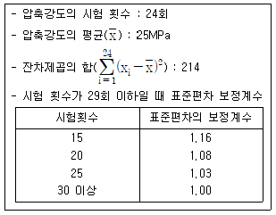
- 2.81MPa
- 3.17MPa
- 3.23MPa
- 3.28MPa
(정답률: 52%)
19. 고로슬래그 미분말을 혼화재료로 사용한 콘크리트의 특성으로 옳은 것은?
- 슬래그 미분말의 혼합률이 높을수록, 분말도가 낮을수록 발열 속도는 빨라진다.
- 슬래그 미분말은 촉진성을 가지므로 콘크리트의 초기양생에 유리하다.
- 슬랙스 미분말 치환율이 클수록 수산화 칼슘량이 희석되므로 염류의 치무가 용이하다.
- 슬래그 미분말 치환율이 클수록 미소세공이 많아지며 동결 가능한 세공용적수가 작아져 동결융해 저항성에 유리하다.
(정답률: 59%)
20. 시멘트의 비중에 대한 일반적인 설명으로 옳은 것은?
- 시멘트의 저장기간이 긴 경우 비중이 커진다.
- 시멘트가 풍화한 경우 비중이 커진다.
- SiO2, Fe2O3가 많을수록 비중이 커진다.
- 시멘트 클링커의 소성이 불충분한 경우 시멘트의 비중은 커진다.
(정답률: 84%)
2과목: 제조, 시험 및 품질관리
21. 콘크리트의 워커빌리티 측정방법에 대한 설명으로 틀린 것은?
- 플로우 시험은 충격을 받은 콘크리트 덩어리의 퍼짐 정도를 측정하는 것으로 콘크리트의 유동성과 분리저항성을 나타내는 것이다.
- 리몰딩 시험은 플로우 시험과 동일하게 플로우 테이블을 사용하지만 콘크리트의 형상이 변화하는데 필요한 일량을 측정함으로써 워커빌리티를 평가하는 시험이다.
- 다짐계수 시험은 워커빌리티를 직접 측정하기 위한 시험으로서 일정량을 일에 의해 이루어지는 다짐의 정도를 구하지만, 신뢰성이 낮고 시험방법이 복잡하다는 단점이 있다.
- VB 시험은 리몰딩 시험에서 발전한 것으로 리몰딩 시험 장치 내의 링을 생략하고, 낙하 대신에 진동으로 다짐을 실시한다.
(정답률: 58%)
22. 레디믹스트 콘크리트의 품질규정에 대한 설명으로 틀린 것은?
- 슬럼프 25mm인 콘크리트에서 플럼프의 허용오차는 ±10mm이다.
- 슬럼프 플로 600mm인 콘크리트에서 슬럼프플로의 허용오차는 ±75mm이다.
- 보통 콘크리트의 공기량은 4.5%이며, 공기량의 허용오차는 ±1.5%이다.
- 경량 콘크리트의 공기량은 5.5%이며, 공기량의 허용오차는 ±1.5%이다.
(정답률: 65%)
23. 콘크리트재료 계량 오차의 계산식으로 옳은 것은? (단, mo : 계량오차(%), m1 : 목표 1회 계량 분량, m2 : 저울에 의한 계측 값)
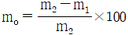
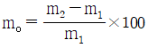
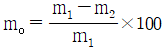
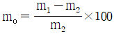
(정답률: 57%)
24. 굳지 않은 콘크리트의 공기량에 대한 일반적인 설명으로 틀린 것은?
- AE제나 감수제에 의해 콘크리트 중에 연행된 미세한 기포는 볼베어링 작용을 하여 콘크리트의 워커빌리티를 개선시킨다.
- 고로슬래그 시멘트를 사용한 콘크리트는 보통 포틀랜드 시멘트를 사용한 경우보다 공기량이 증가한다.
- 공기량이 1% 증가하면 슬럼프가 약 20mm정도 크게 된다.
- 공기량의 워커빌리티 개선효과는 빈배합의 경우에 현저하다.
(정답률: 45%)
25. 굳지 않은 콘크리트의 재료분리 방지를 위한 원칙적인 주의사항으로서 틀린 것은?
- AE제 등의 혼화제를 사용하여 단위수량이 적은 된비빔의 콘크리트로 하고 또한 시멘트량이 너무 적지 않도록 한다.
- 거푸집은 시멘트 풀의 누출을 방지하고 충분한 다짐작업에 견디도록 수밀성이 높고 견고한 것을 사용한다.
- 골재는 세ㆍ조립이 알맞게 혼합되어 입도분포가 양호한 것을 사용하고, 특히 잔골재는 미립분이 없는 것을 사용한다.
- 타설의 경우 높은 곳에서의 자유낙하, 거푸집 내에서 장거리 흘러내림, 특히 콘크리트에 횡방향 속도가 가해진 상태로 거푸집 속으로 부어 넣어서는 안된다.
(정답률: 48%)
26. 콘크리트의 품질관리의 관리도에서 계수값 관리도에 포함되지 않는 것은?
- x 관리도
- p 관리도
- c 관리도
- u 관리도
(정답률: 49%)
27. 콘크리트 구조물 내부의 강재 위치에서 염화물이온 농도(kg/m3)을 구하고자 할 때 필요한 자료가 아닌 것은?
- 염화물이온의 확산계수(cm2/년)
- 콘크리트 표면의 염화물 이온 농도(kg/m3)
- 염화물이온 침입에 의한 내구연수(년)
- 주철근의 공칭직경(mm)
(정답률: 66%)
28. 집단을 구성하고 있는 많은 데이터를 어떤 특징에 따라서 몇 개의 부분집단으로 나누는 것을 의미하는 것으로 측정치에 산포를 포함하는 품질관리의 수법은?
- 층별
- 히스토그램
- 특성요인도
- 파레토도
(정답률: 59%)
29. 콘크리트 제조설비인 믹서(가경식, 중력식)를 공사 시작 전 검사를 실시하였다. 공사 시작 후 13개월이 경과했다면, 공사 중 최소 몇 회 검사를 실시하였겠는가?
- 1회
- 2회
- 4회
- 6회
(정답률: 69%)
30. 염화물 이온 선택 전극법에 의한 굳지 않은 콘크리트의 염화물 함유량 시험(KS F 2587)에 대한 설명으로 틀린 것은?
- 전위차 적정 장치의 교정에 사용하는 표준액으로 염소 이온을 0.1% 함유한 염화나트륨 수용액과 0.5% 함유한 연화나트륨 수용액을 사용한다.
- 콘크리트의 슬럼프와 공기량을 확인한 후, 규정에 따라 콘크리트의 3곳에서 총량 중 20L 정도의 시료를 채취한 후, 이를 충분히 혼합하여 시험용 시료로 사용한다.
- 염화물 이온 선택 전극을 사용한 전위차 적정법을 따르며, 측정횟수는 시료 1개당 3회 실시하는 것을 원칙으로 한다.
- 실험 기구의 세척에는 증류수를 사용하는 것을 원칙으로 한다.
(정답률: 50%)
31. 동결융해 300사이클에서 상대동탄성계수가 74%일 때 시험용 공시체의 내구성 지수는 얼마인가?
- 28%
- 37%
- 56%
- 74%
(정답률: 67%)
32. 콘크리트의 슬럼프시험에 대한 설명으로 틀린 것은?
- 슬럼프콘은 수평으로 설치하였을 때 수밀성이 있는 강제평판 위에 놓고 누른 다음 시료를 거의 같은 양의 3층으로 나누어서 채운다.
- 각 층은 다짐봉으로 고르게 한 후 각 층마다 25회씩 다지고 각 층 다짐봉의 다짐깊이는 그 앞 층에 거의 도달할 정도로 한다.
- 슬럼프콘에 콘크리트를 채우기 시작하고나서 플럼프콘을 들어올리기를 종료할 때까지의 시간은 5분 이내로 한다.
- 슬럼프콘을 가만히 연직으로 들어올리고 콘크리트의 중앙부에서 공시체 높이와의 차를 5mm단위로 측정하여 슬럼프 값으로 한다.
(정답률: 71%)
33. 150×150×530mm의 공시체를 4점 재하장치에 의해 휨강도 시험을 한 결과 최대하중 27kN에서 지간의 가운데 부분에서 파괴가 일어났다. 이 때 휨강도는 얼마인가? (단, 지간은 450mm이다.)
- 4.4MPa
- 4.0MPa
- 3.6MPa
- 3.1MPa
(정답률: 64%)
34. 굳지 않은 콘크리트의 워커빌리티 및 반죽질기에 영향을 미치는 요인에 대한 설명으로 틀린 것은?
- 골재-둥근 모양의 골재는 모가 난 골재보다 워커빌리티를 좋게 한다.
- 시멘트 - 일반적으로 단위 시멘트량이 많을수록 콘크리트는 워커블해진다.
- 온도 - 일반적으로 온도가 높을수록 슬럼프는 작아진다.
- 혼화제 - AE제, 감수제 등의 혼화재료는 콘크리트의 워커빌리티에 영향을 주지 않는다.
(정답률: 66%)
35. 콘크리트의 압축강도 시험값에 영향을 미치는 시험조건의 설명으로 틀린 것은?
- 공시체의 치수가 클수록 압축강도는 작아진다.
- 재하속도가 빠를수록 압축강도는 커진다.
- 공시체는 건조상태보다 습윤상태에서 압축강도가 작아진다.
- 공시체의 지름에 대한 높이의 비(H/D)가 클수록 압축강도는 커진다.
(정답률: 65%)
36. 레디믹스트 콘크리트 공장의 선정에 관한 설명으로 틀린 것은?
- KS 인증공장을 우선으로 선정한다.
- 선정 시 품질 관리 상태 및 납품실적을 고려한다.
- 현장까지의 운반시간도 중요한 선정기준이다.
- 동일공구에 타설되는 콘크리트를 주문하는 경우에는 가능한 많은 수의 공장을 선정한다.
(정답률: 79%)
37. 압축강도 시험결과가 아래 표와 같을 때 변동계수를 구하면? (단, 표준편차는 불편분산의 개념에 따라 구하시오.)
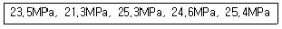
- 3%
- 7%
- 11%
- 15%
(정답률: 55%)
38. 콘크리트 재료의 비비기에 대한 설명으로 틀린 것은?
- 일반적으로 물은 다른 재료의 투입이 끝난 후 조금 지난 뒤에 주입을 시작하는 것이 좋다.
- 연속믹서를 사용할 경우, 비비기를 시작 후 최초에 배출되는 콘크리트는 사용해서는 안된다.
- 재료는 반죽된 콘크리트가 균질하게 될 때까지 충분히 비벼야 한다.
- 비비기를 시작하기 전에 미리 믹서 내부를 모르타르로 부착시켜야 한다.
(정답률: 58%)
39. 강도시험용 공시체의 제작 방법에 대한 설명으로 틀린 것은?
- 콘크리트의 압축강도 시험용 공시체의 지름은 굵은골재 최대치수의 3배이상, 15mm 이상으로 한다.
- 휨강도 시험용 공시체의 한 변의 길이는 굵은골재 최대치수의 4배 이상, 100mm 이상으로 한다.
- 휨강도 시험용 공시체의 길이는 단면이 한변의 길이의 3배보다 80mm이상 긴 것으로 한다.
- 쪼갬인장강도 시험용 공시체의 지름은 굵은골재 최대치수의 4배 이상, 150mm 이상으로 한다.
(정답률: 41%)
40. ø150×300mm의 공시체를 사용하여 콘크리트의 쪼갬 인장강도시험을 실시한 결과 인장강도가 2.8MPa이었다면, 이 시험에서 공시체가 파괴도리 때의 최대하중(P)은?
- 164.23kN
- 197.92kN
- 216.37kN
- 266.2kN
(정답률: 57%)
3과목: 콘크리트의 시공
41. 고온ㆍ고압의 증기솥 속에서 상압보다 높은 압력으로 고온의 수증기를 사용하여 실시하는 양생방법은?
- 오토클레이브양생
- 증기양생
- 촉진양생
- 고주파양생
(정답률: 58%)
42. 콘크리트 공장 제품의 장점에 해당되지 않는 것은?
- 재료, 배합, 생산 설비, 시공 등의 관리를 하기 쉽다.
- 현장에서 거푸집이나 동바리 등의 준비가 필요 없다.
- 규격품을 제조하므로 숙련공을 필요로 하지 않는다.
- 작업하기 쉬운 장소에서 콘크리트를 타설할 수 있고, 기후 상황에 좌우되지 않고 시공을 할 수 있다.
(정답률: 67%)
43. 섬유보강 콘크리트에 대한 일반적인 설명으로 틀린 것은?
- 인장강도와 균열에 대한 저항성이 높다.
- 사용되는 섬유에는 대표적으로 강섬유, 내알칼리성 유리섬유, 폴리프로필렌섬유, 탄소섬유, 아라미드섬유 및 여러 가지 합성섬유 등이 있다.
- 섬유보강 콘크리트용 섬유는 탄성계수는 시멘트 결합재 탄성계수의 1/10 이상이며, 형상비가 30 이상이어야 한다.
- 콘크리트에 대한 강섬유 혼입률의 범위는 용적 백분율로 0.5~2.0% 정도이다.
(정답률: 61%)
44. 숏크리트에 대한 설명으로 옳은 것은?
- 뿜어붙일 면에 용수가 있을 경우에는 상대적으로 습식 숏크리트 보다 건식 숏크리트가 우수하다.
- 습식 숏크리트는 건식 숏크리트에 비해 시공능력이 떨어진다.
- 숏크리트는 대기 온도가 0℃이상일 때 뿜어붙이기를 실시하며, 이 이하의 온도일 때는 적절한 온도대책을 세운 후 실시한다.
- 숏크리트는 평활한 마무리면을 얻을 수 있으며 품질 변동이 적다는 장점이 있다.
(정답률: 48%)
45. 설계기준 압축강도가 24MPa인 콘크리트를 사용하여 슬래브 콘크리트를 타설 하였을 경우, 슬래브 밑면의 거푸집을 해체하기 위해서는 콘크리트는 압축강도가 몇 MPa이상이 되어야 하는가?
- 5MPa
- 10MPa
- 14MPa
- 16MPa
(정답률: 55%)
46. 매스콘크리트의 수축이음에 대한 설명으로 틀린 것은?
- 벽체구조물의 경우 길이방향에 일정간격으로 단면감소 부분을 만든다.
- 수축이음의 단면 감소율은 35%이상으로 하여야 한다.
- 수축이음의 간격은 1~2m를 기준으로 한다.
- 수축이음의 위치는 구조물의 내력에 영향을 미치지 않는 곳에 설치한다.
(정답률: 48%)
47. 표면마무리에 대한 설명으로 틀린 것은?
- 시공이음이 미리 정해져 있지 않을 경우 직선상의 이음이 얻어지도록 시공해야 한다.
- 다지기를 끝내고 거의 소정의 높이와 형상으로 된 콘크리트의 윗면은 스며 올라온 물이 없어지기 전까지 마무리를 해야 한다.
- 마무리 작업 후 콘크리트가 굳기 시작할 때까지의 사이에 일어나는 균열은 다짐 또는 재마무리에 의해서 제거하여야 한다.
- 미끄럽고 치밀한 표면이 필요할 때는 작업이 가능한 범위에서 될 수 있는 대로 늦은 시기에 콘크리트 윗면을 마무리하여야 한다.
(정답률: 44%)
48. 한중콘크리트 시공 시 비빈 직 후 콘크리트의 온도 및 주위 기온이 아래의 조건과 같을 때, 타설이 완료된 후 콘크리트의 온도는?
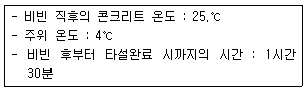
- 19.8℃
- 20.3℃
- 21.6℃
- 22.5℃
(정답률: 57%)
49. 콘크리트의 유동화 방법과 유동화 콘크리트에 대한 설명으로 틀린 것은?
- 유동화제 첨가량은 보통 시멘트 질량의 2~3% 정도이며, 유동화제량은 단위수량의 일부로서 고려하여야 한다.
- 유동화 콘크리트의 슬럼프 증가량은 100mm이하를 원칙으로 하며, 50~80mm를 표준으로 한다.
- 유동화 콘크리트의 재유동화는 원칙적으로 할 수 없다.
- 유동화제는 원액으로 사용하고, 미리 정한 소정의 양을 한꺼번에 첨가하며, 계량은 질량 또는 용적으로 계량하고, 그 계량오차는 1회에 3% 이내로 한다.
(정답률: 40%)
50. 수밀콘크리트의 배합에 대한 설명으로 틀린 것은?
- 소요의 품질이 얻어지는 범위 내에서 단위수량 및 물-결합재비는 되도록 적게한다.
- 단위 굵은 골재량은 작게 한다.
- 콘크리트의 소요 슬럼프는 되도록 적게 하여 180mm를 넘지 않도록 한다.
- 공기량은 4%이하가 되게 한다.
(정답률: 41%)
51. 방사선 차폐용 콘크리트에 대한 설명으로 틀린 것은?
- 주로 생물체의 방호를 위하여 X선, γ선 및 중성자선을 차폐할 목적으로 사용되는 콘크리트를 방사선 차폐용 콘크리트라고 한다.
- 물-결합재비는 50% 이하를 원칙으로 하고, 혼화제를 사용하여서는 안된다.
- 콘크리트의 슬럼프는 일반적인 경우 150mm이하로 한다.
- 차폐용 콘크리트로서 필요한 성능인 밀도, 압축강도, 설계허용온도, 결합수량, 붕소량 등을 확보하여야 한다.
(정답률: 68%)
52. 프리플레이스트 콘크리트에 사용되는 주입 모르타르에 대한 설명으로 틀린 것은?
- 주입 모르타르는 공사의 규모 등을 고려하여 유동성 및 유동성 유지시간을 갖는 것이어야 한다.
- 대규모 프리플레이스트 콘크리트에 사용하는 주입 모르타르는 시공 중에 재료분리를 적게 하기 위해 부배합으로 하여야 한다.
- 팽창률은 블리딩의 5배 이상 정도가 바람직하며, 팽창률이 작으면 모르타르 속의 공극을 크게 하여 해롭다.
- 깊은 해수 중에 시공할 경우에는 압력을 받는 모르타르의 팽창률이 적정 값이 되도록 보일의 법칙에 의하여 팽창재의 혼입량을 증가시켜야 한다.
(정답률: 46%)
53. 고강도 콘크리트의 제조에 사용되는 재료에 대한 설명으로 옳은 것은?
- 고강도 발현을 위해 34종 조강 포틀랜드 시멘트 사용이 원칙이다.
- 플라이 애쉬, 실리카 퓸 등의 혼화재들은 시험배합 없이 바로 사용하여도 무방하다.
- 굵은골재는 균일한 크기의 굵은 알만을 사용하여 시멘트 페이스트를 최대로 사용하도록 한다.
- 굵은골재 최대치수는 40mm이하로서 가능한 25mm이하로 한다.
(정답률: 47%)
54. 프리플레이스트 콘크리트에 사용되는 골재에 대한 설명으로 틀린 것은?
- 잔골재의 조립률은 1.4~2.2범위로 한다.
- 굵은골재의 최대치수와 최소치수와의 차이를 크게 하면 주입모르타르의 소요량이 많아진다.
- 굵은골재의 최소 치수는 15mm 이상으로 하여야 한다.
- 일반적으로 굵은 골재의 최대 치수는 최소 치수의 2~4배 정도로 한다.
(정답률: 41%)
55. 콘크리트의 타설에 대한 설명으로 틀린 것은?
- 콘크리트 타설의 1층 높이는 다짐능력을 고려하여 이를 결정하여야 한다.
- 콘크리트의 타설작업을 할 때에는 철근 및 매설물의 배치나 거푸집이 변형 및 손상되지 않도록 주의해야 한다.
- 한 구획 내의 콘크리트는 타설이 완료될때까지 연속해서 타설해야 한다.
- 타설한 콘크리트는 거푸집 안에서 공극이 없어질 때까지 횡방향으로 이동시켜야 한다.
(정답률: 62%)
56. 서중콘크리트의 시공은 일평균 기온이 몇 ℃를 초과하는 것이 예상되는 경우에 실시하는가?
- 15℃
- 20℃
- 25℃
- 30℃
(정답률: 65%)
57. 콘크리트 펌핑조건이 아래의 표와 같은 때 최대 소요압력(Pmax)을 대략적으로 구하면?
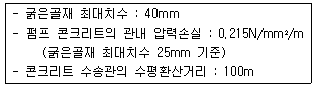
- 11.9N/mm2
- 18.2N/mm2
- 23.7N/mm2
- 35.3N/mm2
(정답률: 38%)
58. 팽창콘크리트에 대한 설명으로 틀린 것은?
- 팽창재는 시멘트와 혼합하여 질량으로 계량하며, 그 오차는 1회 계량분량의 3% 이내로 한다.
- 팽창콘크리트의 팽창률은 일반적으로 재령 7일에 대한 시험값을 기준으로 한다.
- 팽창콘크리트를 제조할 때 팽창재는 원칙적으로 다른재료를 투입할 때 동시에 믹서에 투입한다.
- 팽창콘크리트의 강도는 일반적으로 재령 28일의 압축강도를 기준으로 한다.
(정답률: 43%)
59. 수중콘크리트에 관한 설명으로 틀린 것은?
- 수중붕분리성 콘크리트의 수중유동거리는 10m이하로 하여야 한다.
- 수중불분리성 콘크리트의 타설은 유속이 50mm/s 정도이하의 정수 중에서 수중낙하높이 0.5m 이하여야 한다.
- 수중불분리성 콘크리트를 콘크리트펌프로 압송할 경우 압송압력은 보통콘크리트의 2~3배, 타설속도는 1/2~1/3정도이다.
- 수중불분리성 콘크리트는 유동성이 크고 유동에 따른 품질변화가 적기 때문에 일반 수중 콘크리트보다 트레미 1개 및 콘크리트 펌프 배관 1개당 콘크리트 타설면적을 크게 할 수 있다.
(정답률: 48%)
60. 시공이음에 대한 설명으로 틀린 것은?
- 시공이음은 될 수 있는 대로 전단력이 적은 위치에 설치한다.
- 시공이음은 부재의 압축력이 작용하는 방향과 직각이 되도록 하는 것이 원칙이다.
- 해양 및 항만 콘크리트 구조물 등에 부득이 시공이음부를 설치할 경우에는 만조위로부터 위로 0.6m와 간조위로부터 아래로 0.6m 사이인 감조부 부분을 피해야 한다.
- 부득이 전단력이 큰 곳에 시공이음을 설치하여 철근으로 보강하는 경우 철근의 정착 길이는 철근 지름의 10m 이상으로 한다.
(정답률: 47%)
4과목: 구조 및 유지관리
61. 아래 그림과 같은 반 T형 보에서 플랜지 유효폭(b)의 값으로 옳은 것은?
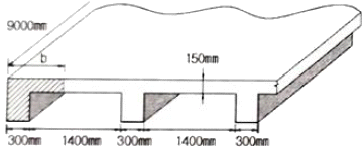
- 950mm
- 1000mm
- 1⑤0mm
- 1100mm
(정답률: 42%)
62. 균열보수공법 중에서 저압ㆍ저속식 주입공법에 대한 설명으로 틀린 것은?
- 주입기에 여분의 주입재료가 남아 있으므로 재료 손실이 크다.
- 저압이므로 실링부 파손이 적고 정확성이 높아 시공관리가 용이하다.
- 주입재는 에폭시 수지 이외에는 사용할 수 없어서 습윤부에 사용이 불가능하다.
- 주입되는 수지는 동심원상으로 확산되므로 주입압력에 의한 균열이나 들뜸이 확대되지 않는다.
(정답률: 63%)
63. 아래 표에서 나타낸 것과 같은 방법으로 방지할 수 있는 콘크리트의 균열은?
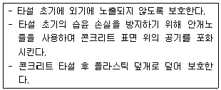
- 철근 부식으로 인한 균열
- 사인장 균열
- 침하 균열
- 소성수축 균열
(정답률: 69%)
64. 다음 중 주각(pedestal)에 대한 설명으로 옳은 것은?
- 기초 위에 돌출된 압축부재로서 단면의 평균최소치수에 대한 높이의 비율이 3이하인 부재
- 보나 지판이 없이 기둥으로 하중을 전달하는 2방향으로 철근이 배치된 콘크리트 스래브
- 보 없이 지판에 의해 하중이 기둥으로 전달되며, 2방향으로 철근이 배치된 콘크리트
- 상부 수직하중을 하부 지반에 분산시키기 위해 저면을 확대시킨 철근콘크리트판
(정답률: 50%)
65. 2방향 슬래브 중 직접설계법을 사용하여 슬래브 시스템을 설계하고자 할 때 제한사항에 대한 설명으로 틀린 것은?
- 슬래브 판들은 단변 경간에 대한 장변경간의 비가 3 이하인 직사각형이어야 한다.
- 각 방향으로 연속한 받침부 중심간 경간차이는 긴 경간의 1/3이하이어야 한다.
- 각 방향으로 3경간 이상이 연속되어야 한다.
- 모든 하중은 슬래브 판 전체에 걸쳐 등분포된 연직하중이어야 하며, 활하중은 고정하중의 2배 이하이어야 한다.
(정답률: 39%)
66. 보수에 대한 일반적인 설명으로 틀린 것은?
- 보수방법은 열화와 손상 및 하자에 의한 단면이나 표면상태를 회복시키는 것을 목적으로 한다.
- 보수에 있어서의 요구수준은 시설물의 현 상태수준 이상으로 하여야 한다.
- 보수에 있어서는 열화원인을 제거하는 것이 원칙이지만, 제거할 수 없는 경우에는 이후의 열화방지대책을 마련해야 한다.
- 콘크리트의 보수에 사용되는 재료는 기존 콘크리트의 탄성계수보다 2~3배 정도 높은 재료를 선택해야 한다.
(정답률: 54%)
67. 아래 그림과 같은 T형 보의 압축연단에서 중립축까지의 거리(c)는 얼마인가? (단, As=6354mm2(8-D32), fck=35MPa, fu=400MPa이다.)
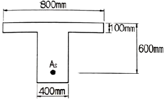
- 113.58mm
- 133.62mm
- 141.80mm
- 157.40mm
(정답률: 31%)
68. 강판접착공법은 RC부재의 인장측 균열외면의 강판을 접착하여 기존의 RC부재와 강판을 일체화시켜 내력향상을 도모하는 방법이다. 이러한 강판접착공법에 대한 장점으로 틀린 것은?
- 방청, 방화상의 내구성이 좋다.
- 강판의 분포, 배치를 똑같이 할 수 있으므로 균열특성이 좋다.
- 강판을 사용하고 있으므로 모든 방향의 인장력에 대응할 수 있다.
- 현장 타설콘크리트, 프리캐스트 부재 모두에 적용할 수 있으므로 응용범위가 넓다.
(정답률: 56%)
69. 콘크리트 품질시험 중에서 현장시험이 아닌 것은?
- 초음파시험
- 반발경도시험
- 코아채취
- 시멘트함유량시험
(정답률: 64%)
70. 철근 콘크리트가 성립되는 이유에 대한 설명으로 틀린 것은?
- 철근과 콘크리트 사이의 부착강도가 크다.
- 콘크리트 속의 철근은 부식되지 않는다.
- 철근과 콘크리트의 탄성계수는 거의 같다.
- 철근은 인장에 강하고, 콘크리트는 압축에 강하다.
(정답률: 62%)
71. 콘크리트의 탄산화 속도에 대한 설명으로 틀린 것은?
- 혼합 시멘트는 보통 포틀랜드 시멘트보다 탄산화 속도가 빠르다.
- 탄산화 속도는 실외보다 실내에 빠르다.
- 경량골재 콘크리트가 보통 콘크리트보다 탄산화 속도가 빠르다.
- 콘크리트에 사용한 골재의 밀도가 작을수록 탄산화 속도가 느리다.
(정답률: 29%)
72. 화재에 의한 콘크리트 구조물의 열화현상에 대한 설명으로 틀린 것은?
- 콘크리트는 약 300℃에서 탄산화된다.
- 급격한 가열 시 피복콘크리트의 폭렬이 발생하기 쉽다.
- 콘크리트는 탈수나 단면 내의 열응력에 의해 균열이 생긴다.
- 콘크리트를 가열하면 정탄성계수의 감소에 의하여 바닥슬래브나 보의 처짐이 증대한다.
(정답률: 65%)
73. 폭 b=300mm, 유효깊이 d=400mm, 등가직사각형 깊이 a=136mm인 직사각형 단면의 보가 있다. 강도설계법에 의한 설계강도 산정 시 사용하는 강도감소계수 값은? (단, fck=24MPa, fu=400MPa이다.)
- 0.78
- 0.82
- 0.83
- 0.84
(정답률: 42%)
74. 보통중량 골재를 사용하고, fck가 35MPa인 철근 콘크리트 보에서 압축이형철근으로 D32(공칭지름 31.8mm)를 사용한다면 기본정착길이(ldb)는? (단, fu=400MPa)
- 538mm
- 547mm
- 562mm
- 575mm
(정답률: 35%)
75. 경간이 15m인 프리스트레스트 콘크리트 단순보에서 PS강재를 대칭 포물선모양으로 배치하였을 때 프리스트레스힘(P)=3500kN에 의하여 콘크리트에 일어나는 등분포상향력은?
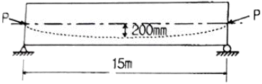
- 19.49kN/m
- 24.89kN/m
- 28.78kN/m
- 34.28kN/m
(정답률: 30%)
76. 아래 표의 조건과 같을 때 1방향 철근 콘크리트 슬래브의 최소 수축ㆍ온도 철근량은?
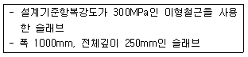
- 250mm2
- 500mm2
- 750mm2
- 1000mm2
(정답률: 50%)
77. 아래 그림과 같은 조건에서 탄성파법에 의해 측정한 균열깊이(d)는 얼마인가? (단, Tc-To법을 사용하며, 측정한 Tc=250μs, To=120μs이고, Tc는 균열을 사이에 두고 측정한 전파시간, To는 건전부 표면에서의 전파시간을 나타낸다.)
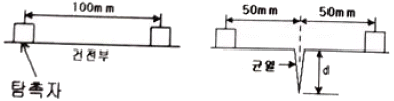
- 78.4mm
- 84.9mm
- 91.4mm
- 98.9mm
(정답률: 59%)
78. 계수전단력 Vu가 콘크리트에 의한 설계전단 강도 øVc의 1/2을 초과하는 철근콘크리트 및 프리스트레스트콘크리트 휨부재에는 최소전단철근을 배치하여야 한다. 이 때 이 규정을 적용하지 않아도 되는 경우에 속하지 않는 것은?
- 슬래브와 기초판
- 전체 깊이가 450mm이하인 보
- T형보에서 그 깊이가 플랜지 두께의 2.52배 또는 복부폭의 1/2 중 큰 값 이하인 보
- 교대 벽체 및 날개벽, 옹벽의 벽체, 암거등과 같이 휨이 주거동인 반부재
(정답률: 44%)
79. 슈미트 해머를 이용하여 재령 28일 된 콘크리트 구조물의 강도평가를 실시하였다. 압축강도가 35MPa로 나왔다면 보정압축강도는 얼마인가? (단, 재령에 따른 보정 이외의 보정은 무시한다.)
- 21MPa
- 28MPa
- 35MPa
- 42MPa
(정답률: 47%)
80. 콘크리트 비파괴시험 방법의 일종인 초음파속도법에 대한 설명으로 틀린 것은?
- 콘크리트는 밀도가 균질하므로 음속만으로 콘크리트의 압축강도를 정확히 측정 할 수 있다.
- 측정법으로는 직접법, 표면법, 간접법 등이 있다.
- 기존 콘크리트 구조물의 구조체 콘크리트의 품질관리, 거푸집 및 동바리의 제 거시기 결정 등에 활용되고 있다.
- 음속법인 경우의 적용 강도 범위는 주로 10~60MPa을 대상으로 하고 있다.
(정답률: 61%)